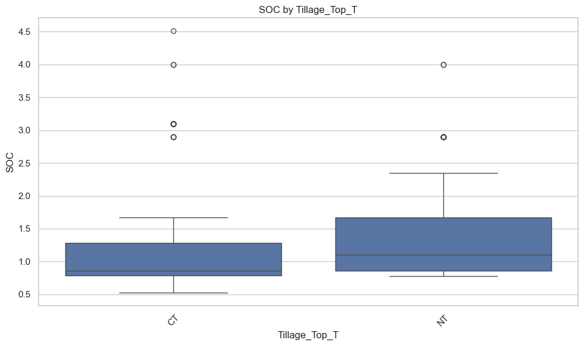

import pandas as pd
import matplotlib.pyplot as plt
import numpy as np
from statsmodels.formula.api import ols
from statsmodels.stats.anova import anova_lm
from statsmodels.stats.multicomp import pairwise_tukeyhsd
import seaborn as snsSummary Statistics
# Load the Excel file
file_path = "SoilHealthDB_V2.xlsx"
excel_file = pd.ExcelFile(file_path)
# Display all sheet names
sheet_names = excel_file.sheet_names
# print(sheet_names)# Load main dataset
main_df = excel_file.parse('Sheet1')
# Display first few rows
main_df.head()| StudyID | ExperimentID | Author_F | Author_G | YearPublication | SamplingYear | Journal | SiteInfor | Country | Latitude | ... | MBN_C_SD | MBN_T_SD | 38.MBN_Comments | Microelement | SQI | ESS | Texture_C | Comments1 | Comments2 | Comments3 | |
|---|---|---|---|---|---|---|---|---|---|---|---|---|---|---|---|---|---|---|---|---|---|
| 0 | 1 | 1-1 | Abawi | G.S. | 2000 | NaN | Applied Soil Ecology | New York | USA | 40.71 | ... | NaN | NaN | NaN | NaN | NaN | NaN | NaN | Root infected by rot | NaN | NaN |
| 1 | 1 | 1-1 | Abawi | G.S. | 2000 | NaN | Applied Soil Ecology | New York | USA | 40.71 | ... | NaN | NaN | NaN | NaN | NaN | NaN | NaN | Root infected by rot | NaN | NaN |
| 2 | 1 | 1-2 | Abawi | G.S. | 2000 | NaN | Applied Soil Ecology | New York | USA | 40.71 | ... | NaN | NaN | NaN | NaN | NaN | NaN | NaN | Root infected by rot | NaN | NaN |
| 3 | 1 | 1-1 | Abawi | G.S. | 2000 | NaN | Applied Soil Ecology | New York | USA | 40.71 | ... | NaN | NaN | NaN | NaN | NaN | NaN | NaN | Root infected by rot | NaN | NaN |
| 4 | 1 | 1-4 | Abawi | G.S. | 2000 | NaN | Applied Soil Ecology | New York | USA | 40.71 | ... | NaN | NaN | NaN | NaN | NaN | NaN | NaN | Root infected by rot | NaN | NaN |
5 rows × 270 columns
# View first 40 column names to explore variables
all_columns = main_df.columns.tolist()
print(all_columns[:40])['StudyID', 'ExperimentID', 'Author_F', 'Author_G', 'YearPublication', 'SamplingYear', 'Journal', 'SiteInfor', 'Country', 'Latitude', 'Longitude', 'Elevation', 'Tannual', 'MAT', 'Pannual', 'MAP', 'ClimateType', 'TimeAfterCoverCrop', 'Duration', 'CC_planting_date', 'CC_termination_date', 'Time_Comments', 'SamplingDepth', 'SamplingThickness', 'CEC', 'CEC_Unit', 'SoilBD', 'SandPerc', 'SiltPerc', 'ClayPerc', 'Texture', 'SoilpH', 'BackgroundSOC', 'SOC_NaturalVeg', 'SoilKsat', 'SoilFamily', 'CoverCrop', 'CoverCropGroup', 'GrainCrop', 'GrainCropGroup']# Select columns of interest
columns_of_interest = [
# Geographic
'SiteInfor', 'Country', 'Latitude', 'Longitude', 'Elevation', 'ClimateType',
# Practices
'CoverCrop', 'CoverCropGroup', 'GrainCrop', 'GrainCropGroup',
# Soil health indicators
'SoilBD', 'SoilpH', 'CEC', 'MBN_C', 'MBN_T'
]
# Create subset
subset_df = main_df[columns_of_interest]
# Summary overview of the subset
print(subset_df.describe(include='all')) SiteInfor Country \
count 5853 5907
unique 367 42
top Agricultural Research Station farm, Fort Valle... USA
freq 193 2272
mean NaN NaN
std NaN NaN
min NaN NaN
25% NaN NaN
50% NaN NaN
75% NaN NaN
max NaN NaN
Latitude Longitude Elevation ClimateType CoverCrop \
count 5884.000000 5884.000000 5497.000000 55 5051
unique NaN NaN NaN 2 406
top NaN NaN NaN Mediterranean Rye
freq NaN NaN NaN 47 509
mean 24.820367 -9.268017 500.234570 NaN NaN
std 23.541664 81.177791 523.039669 NaN NaN
min -43.760000 -123.260000 1.700000 NaN NaN
25% 7.380000 -83.910000 55.300000 NaN NaN
50% 35.390000 3.900000 250.000000 NaN NaN
75% 40.716667 34.600000 988.000000 NaN NaN
max 60.700000 175.610000 2000.000000 NaN NaN
CoverCropGroup GrainCrop GrainCropGroup SoilBD SoilpH \
count 5062 5495 5616 1685.000000 2474.000000
unique 22 158 23 NaN NaN
top Legume Maize Corn NaN NaN
freq 2729 1357 1847 NaN NaN
mean NaN NaN NaN 1.361771 6.337566
std NaN NaN NaN 0.179632 1.138799
min NaN NaN NaN 0.760000 3.990000
25% NaN NaN NaN 1.260000 5.400000
50% NaN NaN NaN 1.370000 6.100000
75% NaN NaN NaN 1.460000 7.500000
max NaN NaN NaN 2.696270 8.700000
CEC MBN_C MBN_T
count 53.000000 194.000000 194.000000
unique NaN NaN NaN
top NaN NaN NaN
freq NaN NaN NaN
mean 32.076038 39.593624 50.257563
std 40.168201 25.574672 34.353027
min 3.350000 1.300000 1.500000
25% 8.730000 20.034800 21.943800
50% 18.800000 37.100000 47.200000
75% 29.500000 53.500000 75.315000
max 171.000000 187.000000 247.000000 pd.set_option('display.max_columns', None)
# Ensure SOC is included
subset_df.loc[:, 'SOC'] = main_df['BackgroundSOC']
# Define indicators
soil_indicators = ['SoilBD', 'SoilpH', 'CEC', 'SOC', 'MBN_C', 'MBN_T']
# Summary statistics by CoverCropGroup (per column, dropping NaNs)
summary_by_covercrop = subset_df.groupby('CoverCropGroup')[soil_indicators].agg(['count', 'mean', 'std', 'min', 'max'])
# Summary statistics by Country (per column, dropping NaNs)
summary_by_country = subset_df.groupby('Country')[soil_indicators].agg(['count', 'mean', 'std', 'min', 'max'])
# Display results
# print("Summary by CoverCropGroup:\n", summary_by_covercrop)
# print("\nSummary by Country:\n", summary_by_country)
summary_by_covercrop.head()
summary_by_country.head(50)
| SoilBD | SoilpH | CEC | SOC | MBN_C | MBN_T | |||||||||||||||||||||||||
|---|---|---|---|---|---|---|---|---|---|---|---|---|---|---|---|---|---|---|---|---|---|---|---|---|---|---|---|---|---|---|
| count | mean | std | min | max | count | mean | std | min | max | count | mean | std | min | max | count | mean | std | min | max | count | mean | std | min | max | count | mean | std | min | max | |
| Country | ||||||||||||||||||||||||||||||
| Argentina | 64 | 1.214167 | 0.099462 | 1.130000 | 1.46000 | 6 | 6.000000 | 0.000000 | 6.000000 | 6.00 | 0 | NaN | NaN | NaN | NaN | 8 | 2.527500 | 0.235175 | 2.300000 | 2.800000 | 0 | NaN | NaN | NaN | NaN | 0 | NaN | NaN | NaN | NaN |
| Australia | 0 | NaN | NaN | NaN | NaN | 8 | 5.775000 | 0.520302 | 5.400000 | 6.60 | 2 | 4.550000 | 0.212132 | 4.40 | 4.70 | 8 | 0.995000 | 0.257516 | 0.600000 | 1.190000 | 0 | NaN | NaN | NaN | NaN | 0 | NaN | NaN | NaN | NaN |
| Bangladesh | 0 | NaN | NaN | NaN | NaN | 0 | NaN | NaN | NaN | NaN | 0 | NaN | NaN | NaN | NaN | 0 | NaN | NaN | NaN | NaN | 0 | NaN | NaN | NaN | NaN | 0 | NaN | NaN | NaN | NaN |
| Benin | 0 | NaN | NaN | NaN | NaN | 4 | 5.250000 | 0.404145 | 4.900000 | 5.60 | 0 | NaN | NaN | NaN | NaN | 0 | NaN | NaN | NaN | NaN | 0 | NaN | NaN | NaN | NaN | 0 | NaN | NaN | NaN | NaN |
| Brazil | 39 | 1.270103 | 0.172382 | 0.989000 | 1.50000 | 25 | 5.080800 | 0.750805 | 4.500000 | 6.31 | 0 | NaN | NaN | NaN | NaN | 17 | 1.730729 | 0.984797 | 0.812000 | 3.612000 | 0 | NaN | NaN | NaN | NaN | 0 | NaN | NaN | NaN | NaN |
| Cameroon | 0 | NaN | NaN | NaN | NaN | 22 | 5.181818 | 0.113961 | 5.000000 | 5.25 | 0 | NaN | NaN | NaN | NaN | 16 | 1.800000 | 0.103280 | 1.700000 | 1.900000 | 0 | NaN | NaN | NaN | NaN | 0 | NaN | NaN | NaN | NaN |
| Canada | 104 | 1.504839 | 0.123546 | 1.289758 | 1.69000 | 22 | 6.795455 | 1.126933 | 5.000000 | 7.60 | 0 | NaN | NaN | NaN | NaN | 28 | 3.296000 | 1.376452 | 1.672000 | 4.466000 | 0 | NaN | NaN | NaN | NaN | 0 | NaN | NaN | NaN | NaN |
| China | 315 | 1.270389 | 0.104592 | 1.080000 | 1.47000 | 510 | 6.912627 | 1.278658 | 3.990000 | 8.30 | 2 | 13.480000 | 1.159655 | 12.66 | 14.30 | 636 | 2.170725 | 1.535821 | 0.260000 | 6.100000 | 42 | 44.152381 | 20.963508 | 1.30 | 76.85 | 42 | 52.359048 | 24.180159 | 3.00 | 115.06 |
| Costa Rica | 0 | NaN | NaN | NaN | NaN | 0 | NaN | NaN | NaN | NaN | 0 | NaN | NaN | NaN | NaN | 0 | NaN | NaN | NaN | NaN | 0 | NaN | NaN | NaN | NaN | 0 | NaN | NaN | NaN | NaN |
| Denmark | 32 | 1.364238 | 0.047516 | 1.330300 | 1.54000 | 44 | 6.397727 | 0.199405 | 6.100000 | 7.10 | 4 | 129.750000 | 21.328776 | 110.00 | 160.00 | 57 | 2.159930 | 0.663736 | 1.280000 | 3.100000 | 24 | 30.500000 | 3.162278 | 27.00 | 36.00 | 24 | 37.791667 | 6.379172 | 27.00 | 53.00 |
| England | 2 | 0.930000 | 0.169706 | 0.810000 | 1.05000 | 2 | 7.550000 | 0.070711 | 7.500000 | 7.60 | 3 | 15.070000 | 6.101008 | 8.73 | 20.90 | 5 | 2.092419 | 0.636923 | 1.511628 | 3.093023 | 0 | NaN | NaN | NaN | NaN | 0 | NaN | NaN | NaN | NaN |
| France | 14 | 1.222857 | 0.175035 | 1.000000 | 1.52000 | 20 | 6.900000 | 0.263579 | 6.200000 | 7.20 | 0 | NaN | NaN | NaN | NaN | 12 | 1.160000 | 0.000000 | 1.160000 | 1.160000 | 1 | 100.000000 | NaN | 100.00 | 100.00 | 1 | 130.000000 | NaN | 130.00 | 130.00 |
| Germany | 26 | 1.449478 | 0.095068 | 1.300000 | 1.64000 | 6 | 6.033333 | 0.051640 | 6.000000 | 6.10 | 0 | NaN | NaN | NaN | NaN | 9 | 1.518918 | 1.223361 | 0.686525 | 3.150000 | 3 | 1.666667 | 0.288675 | 1.50 | 2.00 | 3 | 1.766667 | 0.251661 | 1.50 | 2.00 |
| Ghana | 0 | NaN | NaN | NaN | NaN | 20 | 4.917000 | 0.230380 | 4.770000 | 5.26 | 6 | 3.505000 | 0.169794 | 3.35 | 3.66 | 20 | 0.556000 | 0.056419 | 0.520000 | 0.640000 | 0 | NaN | NaN | NaN | NaN | 0 | NaN | NaN | NaN | NaN |
| Greece | 3 | 1.490000 | 0.000000 | 1.490000 | 1.49000 | 7 | 7.724286 | 0.331404 | 7.370000 | 7.99 | 0 | NaN | NaN | NaN | NaN | 0 | NaN | NaN | NaN | NaN | 7 | 43.142857 | 25.122557 | 23.00 | 70.00 | 7 | 44.428571 | 37.464904 | 13.00 | 100.00 |
| Guinea | 0 | NaN | NaN | NaN | NaN | 0 | NaN | NaN | NaN | NaN | 0 | NaN | NaN | NaN | NaN | 0 | NaN | NaN | NaN | NaN | 0 | NaN | NaN | NaN | NaN | 0 | NaN | NaN | NaN | NaN |
| India | 0 | NaN | NaN | NaN | NaN | 0 | NaN | NaN | NaN | NaN | 0 | NaN | NaN | NaN | NaN | 0 | NaN | NaN | NaN | NaN | 0 | NaN | NaN | NaN | NaN | 0 | NaN | NaN | NaN | NaN |
| Indonesia | 0 | NaN | NaN | NaN | NaN | 7 | 4.455714 | 0.616654 | 4.000000 | 5.75 | 0 | NaN | NaN | NaN | NaN | 7 | 3.222857 | 0.667551 | 2.290000 | 4.010000 | 0 | NaN | NaN | NaN | NaN | 0 | NaN | NaN | NaN | NaN |
| Italy | 24 | 1.442500 | 0.035661 | 1.400000 | 1.48000 | 52 | 8.063077 | 0.323907 | 6.900000 | 8.40 | 1 | 23.000000 | NaN | 23.00 | 23.00 | 15 | 0.804000 | 0.218209 | 0.390000 | 0.950000 | 2 | 44.950000 | 22.839549 | 28.80 | 61.10 | 2 | 54.800000 | 37.900923 | 28.00 | 81.60 |
| Kenya | 0 | NaN | NaN | NaN | NaN | 100 | 5.433000 | 0.167003 | 5.000000 | 5.70 | 0 | NaN | NaN | NaN | NaN | 100 | 1.387490 | 0.621590 | 0.140000 | 1.790000 | 0 | NaN | NaN | NaN | NaN | 0 | NaN | NaN | NaN | NaN |
| Malawi | 33 | 1.300000 | 0.082916 | 1.200000 | 1.40000 | 183 | 5.913005 | 0.252365 | 5.300000 | 6.50 | 0 | NaN | NaN | NaN | NaN | 180 | 1.176978 | 0.475998 | 0.585000 | 2.110000 | 0 | NaN | NaN | NaN | NaN | 0 | NaN | NaN | NaN | NaN |
| Netherland | 0 | NaN | NaN | NaN | NaN | 8 | 7.947500 | 1.071977 | 5.460000 | 8.46 | 0 | NaN | NaN | NaN | NaN | 6 | 0.893200 | 0.000000 | 0.893200 | 0.893200 | 0 | NaN | NaN | NaN | NaN | 0 | NaN | NaN | NaN | NaN |
| New Zealand | 7 | 1.070000 | 0.000000 | 1.070000 | 1.07000 | 7 | 6.100000 | 0.000000 | 6.100000 | 6.10 | 7 | 19.742857 | 6.810251 | 7.80 | 28.50 | 7 | 4.840000 | 0.000000 | 4.840000 | 4.840000 | 14 | 62.071429 | 12.206331 | 50.00 | 86.00 | 14 | 75.857143 | 23.260588 | 27.00 | 120.00 |
| Nigeria | 86 | 1.306744 | 0.014828 | 1.240000 | 1.31000 | 281 | 7.256940 | 0.867354 | 4.400000 | 7.80 | 4 | 7.180000 | 1.004589 | 6.31 | 8.05 | 357 | 1.733894 | 0.579176 | 0.570000 | 2.170000 | 0 | NaN | NaN | NaN | NaN | 0 | NaN | NaN | NaN | NaN |
| Norway | 0 | NaN | NaN | NaN | NaN | 0 | NaN | NaN | NaN | NaN | 0 | NaN | NaN | NaN | NaN | 0 | NaN | NaN | NaN | NaN | 4 | 41.050000 | 4.884329 | 36.70 | 46.60 | 4 | 51.600000 | 2.655811 | 49.30 | 53.90 |
| Peru | 0 | NaN | NaN | NaN | NaN | 0 | NaN | NaN | NaN | NaN | 0 | NaN | NaN | NaN | NaN | 0 | NaN | NaN | NaN | NaN | 0 | NaN | NaN | NaN | NaN | 0 | NaN | NaN | NaN | NaN |
| Philippines | 0 | NaN | NaN | NaN | NaN | 0 | NaN | NaN | NaN | NaN | 0 | NaN | NaN | NaN | NaN | 0 | NaN | NaN | NaN | NaN | 0 | NaN | NaN | NaN | NaN | 0 | NaN | NaN | NaN | NaN |
| Poland | 0 | NaN | NaN | NaN | NaN | 0 | NaN | NaN | NaN | NaN | 0 | NaN | NaN | NaN | NaN | 0 | NaN | NaN | NaN | NaN | 0 | NaN | NaN | NaN | NaN | 0 | NaN | NaN | NaN | NaN |
| Republic of Moldova | 0 | NaN | NaN | NaN | NaN | 2 | 6.100000 | 0.000000 | 6.100000 | 6.10 | 0 | NaN | NaN | NaN | NaN | 0 | NaN | NaN | NaN | NaN | 0 | NaN | NaN | NaN | NaN | 0 | NaN | NaN | NaN | NaN |
| Russia | 0 | NaN | NaN | NaN | NaN | 0 | NaN | NaN | NaN | NaN | 0 | NaN | NaN | NaN | NaN | 0 | NaN | NaN | NaN | NaN | 0 | NaN | NaN | NaN | NaN | 0 | NaN | NaN | NaN | NaN |
| Rwanda | 0 | NaN | NaN | NaN | NaN | 0 | NaN | NaN | NaN | NaN | 0 | NaN | NaN | NaN | NaN | 0 | NaN | NaN | NaN | NaN | 0 | NaN | NaN | NaN | NaN | 0 | NaN | NaN | NaN | NaN |
| South Korea | 2 | 1.200000 | 0.000000 | 1.200000 | 1.20000 | 6 | 6.333333 | 0.206559 | 6.200000 | 6.60 | 0 | NaN | NaN | NaN | NaN | 6 | 1.876667 | 0.253035 | 1.550000 | 2.040000 | 0 | NaN | NaN | NaN | NaN | 0 | NaN | NaN | NaN | NaN |
| Spain | 8 | 1.270000 | 0.074833 | 1.200000 | 1.34000 | 58 | 7.989885 | 0.244408 | 7.853333 | 8.70 | 3 | 125.333333 | 44.545857 | 82.00 | 171.00 | 60 | 1.368220 | 1.511281 | 0.759800 | 7.900000 | 0 | NaN | NaN | NaN | NaN | 0 | NaN | NaN | NaN | NaN |
| Sweden | 1 | 1.360000 | NaN | 1.360000 | 1.36000 | 0 | NaN | NaN | NaN | NaN | 0 | NaN | NaN | NaN | NaN | 0 | NaN | NaN | NaN | NaN | 0 | NaN | NaN | NaN | NaN | 0 | NaN | NaN | NaN | NaN |
| Switzerland | 0 | NaN | NaN | NaN | NaN | 0 | NaN | NaN | NaN | NaN | 0 | NaN | NaN | NaN | NaN | 0 | NaN | NaN | NaN | NaN | 0 | NaN | NaN | NaN | NaN | 0 | NaN | NaN | NaN | NaN |
| Tanzania | 0 | NaN | NaN | NaN | NaN | 43 | 6.737209 | 0.998337 | 5.900000 | 7.90 | 0 | NaN | NaN | NaN | NaN | 43 | 1.297674 | 0.599002 | 0.600000 | 1.800000 | 0 | NaN | NaN | NaN | NaN | 0 | NaN | NaN | NaN | NaN |
| Togo | 0 | NaN | NaN | NaN | NaN | 58 | 5.906897 | 0.140003 | 5.700000 | 6.00 | 0 | NaN | NaN | NaN | NaN | 40 | 0.800000 | 0.000000 | 0.800000 | 0.800000 | 0 | NaN | NaN | NaN | NaN | 0 | NaN | NaN | NaN | NaN |
| Turkey | 0 | NaN | NaN | NaN | NaN | 41 | 6.888780 | 0.360390 | 6.700000 | 7.56 | 0 | NaN | NaN | NaN | NaN | 41 | 2.115854 | 0.733352 | 0.750000 | 2.500000 | 0 | NaN | NaN | NaN | NaN | 0 | NaN | NaN | NaN | NaN |
| USA | 868 | 1.392644 | 0.197964 | 0.760000 | 2.69627 | 461 | 6.443004 | 0.707495 | 5.344444 | 8.30 | 21 | 24.419524 | 7.513420 | 9.90 | 34.60 | 415 | 1.250704 | 0.668401 | 0.470000 | 4.508772 | 97 | 36.749104 | 29.374506 | 4.41 | 187.00 | 97 | 49.686467 | 40.712847 | 7.56 | 247.00 |
| Uganda | 0 | NaN | NaN | NaN | NaN | 96 | 5.216667 | 0.168377 | 4.800000 | 5.60 | 0 | NaN | NaN | NaN | NaN | 96 | 2.835417 | 0.493106 | 2.100000 | 5.600000 | 0 | NaN | NaN | NaN | NaN | 0 | NaN | NaN | NaN | NaN |
| Zambia | 57 | 1.504386 | 0.186739 | 1.180000 | 1.61000 | 342 | 5.144620 | 0.382607 | 4.350000 | 5.60 | 0 | NaN | NaN | NaN | NaN | 380 | 0.779526 | 0.270713 | 0.400000 | 1.400000 | 0 | NaN | NaN | NaN | NaN | 0 | NaN | NaN | NaN | NaN |
| Zimbabwe | 0 | NaN | NaN | NaN | NaN | 33 | 4.745455 | 0.117502 | 4.500000 | 4.80 | 0 | NaN | NaN | NaN | NaN | 33 | 0.492727 | 0.015667 | 0.460000 | 0.500000 | 0 | NaN | NaN | NaN | NaN | 0 | NaN | NaN | NaN | NaN |
cover_crop_map = {
'No': 'None',
'Not_available': 'None',
'Legume': 'Legume',
'Grass': 'Grass',
'Brassica': 'Brassica',
'Mixed': 'Mixed',
'Broadleaf': 'Other',
'Broadleaf/Brassica': 'Other',
'LB': 'Mixed',
'LG': 'Mixed',
'LL': 'Mixed',
'MMT': 'Other',
'MOT': 'Other',
'GG': 'Grass',
'LT': 'Legume',
'Legume_Tree': 'Legume',
'Rye': 'Grass',
'M': 'Mixed',
'Other': 'Other'
}
main_df['CoverCropGroup_clean'] = main_df['CoverCropGroup'].map(cover_crop_map).fillna('Other')def simplify_tillage(value):
if pd.isna(value):
return 'Unknown'
value = str(value).lower()
if 'no' in value or 'nt' in value:
return 'No-till'
elif 'reduced' in value or 'minimum' in value or 'strip' in value:
return 'Reduced-till'
elif 'conventional' in value or 'moldboard' in value or 'intensive' in value:
return 'Conventional'
else:
return 'Other'
main_df['Tillage_clean'] = main_df['Tillage_Top_T'].apply(simplify_tillage)Prepare data for analysis - exploration
viz_df = main_df[[
'CoverCropGroup_clean', 'Tillage_clean', 'Country', 'Latitude', 'Elevation',
'SoilBD', 'SoilpH', 'CEC', 'BackgroundSOC', 'MBN_T'
]].rename(columns={'BackgroundSOC': 'SOC'})
viz_df.dropna(subset=['CoverCropGroup_clean', 'Tillage_clean', 'SOC'], inplace=True)sns.catplot(
data=viz_df,
x='CoverCropGroup_clean',
y='SOC',
col='Tillage_clean',
kind='box',
col_wrap=3,
height=4,
aspect=1.3,
sharey=False
)# Ensure SOC and relevant management variables are present
df = main_df
if 'SOC' not in main_df.columns:
main_df['SOC'] = main_df['BackgroundSOC']
management_vars = ['CoverCropGroup', 'Tillage_Top_T', 'Rotation_Top_T', 'GrainCropGroup', 'Grazing_Top_T']
anova_results = {}
tukey_results = {}
for var in management_vars:
if var in df.columns:
temp_df = df[['SOC', var]].dropna()
if temp_df[var].nunique() < 2:
continue
# One-way ANOVA
model = ols(f'SOC ~ C({var})', data=temp_df).fit()
anova_table = anova_lm(model, typ=2)
anova_results[var] = anova_table
# Tukey HSD
tukey = pairwise_tukeyhsd(endog=temp_df['SOC'], groups=temp_df[var], alpha=0.05)
tukey_results[var] = tukey.summary()
# Boxplot with groupings
plt.figure(figsize=(10, 6))
sns.boxplot(data=temp_df, x=var, y='SOC')
plt.title(f'SOC by {var}')
plt.xticks(rotation=45)
plt.tight_layout()
plt.show()

import pandas as pd
import matplotlib.pyplot as plt
import seaborn as sns
from statsmodels.formula.api import ols
from statsmodels.stats.anova import anova_lm
from statsmodels.stats.multicomp import pairwise_tukeyhsd
# Replace with your actual DataFrame
df = main_df.copy()
# Ensure SOC is numeric and management variables are present
management_vars = ['CoverCropGroup', 'Tillage_Top_T', 'Rotation_Top_T', 'GrainCropGroup', 'Grazing_Top_T']
tukey_results = {}
for var in management_vars:
if var in df.columns:
temp_df = df[['SOC', var]].dropna()
# Ensure SOC is numeric
temp_df = temp_df[temp_df['SOC'].apply(lambda x: isinstance(x, (int, float)))]
if temp_df[var].nunique() < 2:
print(f"Skipping {var}: only one category present.")
continue
print(f"\n--- Tukey HSD Results for {var} ---")
# Run ANOVA to ensure differences exist
model = ols(f'SOC ~ C({var})', data=temp_df).fit()
anova_table = anova_lm(model, typ=2)
print("ANOVA Table:")
print(anova_table)
# Tukey HSD
tukey = pairwise_tukeyhsd(endog=temp_df['SOC'], groups=temp_df[var], alpha=0.05)
tukey_results[var] = tukey.summary()
print(tukey_results[var])
# Plot boxplot with group labels
plt.figure(figsize=(10, 6))
sns.boxplot(data=temp_df, x=var, y='SOC')
plt.title(f'Soil Organic Carbon (SOC) by {var}')
plt.xticks(rotation=45)
plt.tight_layout()
plt.show()
--- Tukey HSD Results for CoverCropGroup ---
ANOVA Table:
sum_sq df F PR(>F)
C(CoverCropGroup) 533.109344 15.0 43.451048 1.920378e-113
Residual 1949.983925 2384.0 NaN NaN
Multiple Comparison of Means - Tukey HSD, FWER=0.05
============================================================================
group1 group2 meandiff p-adj lower upper reject
----------------------------------------------------------------------------
AVG Brassica 0.1037 1.0 -0.6314 0.8388 False
AVG Broadleaf -0.15 1.0 -0.9876 0.6876 False
AVG Broadleaf/Brassica -1.4196 0.9781 -4.5855 1.7462 False
AVG Grass 1.0581 0.0 0.4005 1.7157 True
AVG LB 1.3194 0.3301 -0.3558 2.9946 False
AVG LG -0.0792 1.0 -0.799 0.6407 False
AVG LL -0.6939 0.0742 -1.4148 0.027 False
AVG Legume -0.2599 0.9914 -0.8982 0.3784 False
AVG Legume_Tree 0.1418 1.0 -0.5411 0.8247 False
AVG MMT -0.4206 0.9954 -1.5173 0.6761 False
AVG MOT 0.3669 0.9944 -0.5722 1.306 False
AVG Mixed -0.6103 0.7712 -1.6114 0.3908 False
AVG No 1.3386 0.0012 0.2954 2.3817 True
AVG Not_available 0.5094 1.0 -1.7735 2.7923 False
AVG Rye -0.2669 0.9955 -0.964 0.4303 False
Brassica Broadleaf -0.2537 0.9955 -0.9171 0.4097 False
Brassica Broadleaf/Brassica -1.5233 0.9539 -4.6476 1.6009 False
Brassica Grass 0.9543 0.0 0.5408 1.3678 True
Brassica LB 1.2157 0.3893 -0.3796 2.8109 False
Brassica LG -0.1829 0.9976 -0.6896 0.3239 False
Brassica LL -0.7977 0.0 -1.3058 -0.2895 True
Brassica Legume -0.3636 0.0828 -0.7456 0.0184 False
Brassica Legume_Tree 0.0381 1.0 -0.4145 0.4908 False
Brassica MMT -0.5243 0.8962 -1.4945 0.4458 False
Brassica MOT 0.2632 0.999 -0.5246 1.0509 False
Brassica Mixed -0.714 0.2441 -1.5747 0.1467 False
Brassica No 1.2349 0.0004 0.3256 2.1441 True
Brassica Not_available 0.4057 1.0 -1.8193 2.6306 False
Brassica Rye -0.3706 0.3427 -0.8445 0.1033 False
Broadleaf Broadleaf/Brassica -1.2696 0.9923 -4.4196 1.8803 False
Broadleaf Grass 1.2081 0.0 0.6317 1.7844 True
Broadleaf LB 1.4694 0.1442 -0.1756 3.1144 False
Broadleaf LG 0.0708 1.0 -0.5757 0.7174 False
Broadleaf LL -0.5439 0.2255 -1.1916 0.1037 False
Broadleaf Legume -0.1099 1.0 -0.6641 0.4444 False
Broadleaf Legume_Tree 0.2918 0.958 -0.3133 0.8969 False
Broadleaf MMT -0.2706 1.0 -1.3206 0.7794 False
Broadleaf MOT 0.5169 0.8227 -0.3673 1.4011 False
Broadleaf Mixed -0.4603 0.9562 -1.4101 0.4894 False
Broadleaf No 1.4886 0.0 0.4946 2.4825 True
Broadleaf Not_available 0.6594 0.9998 -1.6015 2.9202 False
Broadleaf Rye -0.1169 1.0 -0.738 0.5043 False
Broadleaf/Brassica Grass 2.4777 0.3085 -0.6293 5.5846 False
Broadleaf/Brassica LB 2.739 0.3252 -0.729 6.207 False
Broadleaf/Brassica LG 1.3405 0.9854 -1.7803 4.4612 False
Broadleaf/Brassica LL 0.7257 1.0 -2.3953 3.8466 False
Broadleaf/Brassica Legume 1.1597 0.9965 -1.9432 4.2627 False
Broadleaf/Brassica Legume_Tree 1.5614 0.9416 -1.551 4.6739 False
Broadleaf/Brassica MMT 0.999 0.9996 -2.2295 4.2275 False
Broadleaf/Brassica MOT 1.7865 0.8631 -1.392 4.965 False
Broadleaf/Brassica Mixed 0.8093 1.0 -2.388 4.0066 False
Broadleaf/Brassica No 2.7582 0.1933 -0.4525 5.9689 False
Broadleaf/Brassica Not_available 1.929 0.9356 -1.87 5.728 False
Broadleaf/Brassica Rye 1.1527 0.9969 -1.9628 4.2683 False
Grass LB 0.2613 1.0 -1.2998 1.8224 False
Grass LG -1.1372 0.0 -1.5231 -0.7514 True
Grass LL -1.752 0.0 -2.1397 -1.3643 True
Grass Legume -1.3179 0.0 -1.513 -1.1229 True
Grass Legume_Tree -0.9162 0.0 -1.2277 -0.6048 True
Grass MMT -1.4787 0.0 -2.3916 -0.5658 True
Grass MOT -0.6912 0.0721 -1.4071 0.0248 False
Grass Mixed -1.6684 0.0 -2.4639 -0.8728 True
Grass No 0.2805 0.9991 -0.5673 1.1283 False
Grass Not_available -0.5487 1.0 -2.7492 1.6519 False
Grass Rye -1.3249 0.0 -1.6665 -0.9833 True
LB LG -1.3985 0.1612 -2.9869 0.1898 False
LB LL -2.0133 0.0016 -3.6021 -0.4246 True
LB Legume -1.5793 0.0415 -3.1323 -0.0262 True
LB Legume_Tree -1.1776 0.4208 -2.7494 0.3943 False
LB MMT -1.74 0.0676 -3.5309 0.0509 False
LB MOT -0.9525 0.8655 -2.6515 0.7465 False
LB Mixed -1.9297 0.0132 -3.6637 -0.1957 True
LB No 0.0192 1.0 -1.7394 1.7778 False
LB Not_available -0.81 0.9997 -3.4963 1.8763 False
LB Rye -1.5863 0.0473 -3.1644 -0.0081 True
LG LL -0.6148 0.0016 -1.1007 -0.1289 True
LG Legume -0.1807 0.9296 -0.5326 0.1712 False
LG Legume_Tree 0.221 0.9259 -0.2066 0.6485 False
LG MMT -0.3415 0.9979 -1.3002 0.6173 False
LG MOT 0.446 0.8377 -0.3275 1.2196 False
LG Mixed -0.5312 0.7329 -1.3789 0.3166 False
LG No 1.4177 0.0 0.5207 2.3147 True
LG Not_available 0.5885 0.9999 -1.6314 2.8085 False
LG Rye -0.1877 0.989 -0.6377 0.2623 False
LL Legume 0.4341 0.0028 0.0801 0.788 True
LL Legume_Tree 0.8358 0.0 0.4065 1.265 True
LL MMT 0.2733 0.9999 -0.6862 1.2328 False
LL MOT 1.0608 0.0003 0.2863 1.8353 True
LL Mixed 0.0836 1.0 -0.765 0.9322 False
LL No 2.0325 0.0 1.1347 2.9303 True
LL Not_available 1.2033 0.8941 -1.0169 3.4236 False
LL Rye 0.4271 0.0879 -0.0245 0.8787 False
Legume Legume_Tree 0.4017 0.0 0.1335 0.67 True
Legume MMT -0.1607 1.0 -1.0598 0.7383 False
Legume MOT 0.6268 0.1386 -0.0715 1.3251 False
Legume Mixed -0.3504 0.9776 -1.1301 0.4292 False
Legume No 1.5985 0.0 0.7655 2.4314 True
Legume Not_available 0.7693 0.9983 -1.4256 2.9641 False
Legume Rye -0.007 1.0 -0.3097 0.2958 False
Legume_Tree MMT -0.5624 0.7834 -1.4937 0.3688 False
Legume_Tree MOT 0.2251 0.9997 -0.5142 0.9643 False
Legume_Tree Mixed -0.7521 0.1116 -1.5687 0.0644 False
Legume_Tree No 1.1967 0.0003 0.3292 2.0643 True
Legume_Tree Not_available 0.3676 1.0 -1.8407 2.5758 False
Legume_Tree Rye -0.4087 0.0274 -0.7968 -0.0206 True
MMT MOT 0.7875 0.5595 -0.3451 1.9202 False
MMT Mixed -0.1897 1.0 -1.3742 0.9949 False
MMT No 1.7592 0.0001 0.5389 2.9795 True
MMT Not_available 0.93 0.9941 -1.4391 3.2991 False
MMT Rye 0.1537 1.0 -0.788 1.0955 False
MOT Mixed -0.9772 0.0937 -2.0176 0.0632 False
MOT No 0.9717 0.1369 -0.1092 2.0526 False
MOT Not_available 0.1425 1.0 -2.1579 2.4429 False
MOT Rye -0.6338 0.2213 -1.3863 0.1187 False
Mixed No 1.9489 0.0 0.8137 3.0841 True
Mixed Not_available 1.1197 0.9587 -1.2067 3.4461 False
Mixed Rye 0.3434 0.9897 -0.4851 1.172 False
No Not_available -0.8292 0.9981 -3.174 1.5156 False
No Rye -1.6055 0.0 -2.4843 -0.7266 True
Not_available Rye -0.7763 0.9983 -2.9889 1.4364 False
----------------------------------------------------------------------------
--- Tukey HSD Results for Tillage_Top_T ---
ANOVA Table:
sum_sq df F PR(>F)
C(Tillage_Top_T) 2.336400 1.0 3.66116 0.0567
Residual 181.236964 284.0 NaN NaN
Multiple Comparison of Means - Tukey HSD, FWER=0.05
===================================================
group1 group2 meandiff p-adj lower upper reject
---------------------------------------------------
CT NT 0.1826 0.0567 -0.0052 0.3704 False
---------------------------------------------------
--- Tukey HSD Results for GrainCropGroup ---
ANOVA Table:
sum_sq df F PR(>F)
C(GrainCropGroup) 609.207176 18.0 33.039534 4.064026e-102
Residual 2561.959674 2501.0 NaN NaN
Multiple Comparison of Means - Tukey HSD, FWER=0.05
==========================================================
group1 group2 meandiff p-adj lower upper reject
----------------------------------------------------------
AVG Arable 0.5075 0.1202 -0.0459 1.0609 False
AVG CO -1.1348 0.0595 -2.2873 0.0178 False
AVG CS 0.0529 1.0 -1.0321 1.1379 False
AVG CSO 1.1572 0.0225 0.0722 2.2422 True
AVG CSW -0.9317 0.9904 -3.0538 1.1903 False
AVG CV -0.8615 0.0016 -1.5483 -0.1747 True
AVG CVO -0.0417 1.0 -0.9127 0.8293 False
AVG Corn -0.3795 0.542 -0.9096 0.1506 False
AVG MTT -0.0928 1.0 -1.9489 1.7632 False
AVG Maize -0.8428 0.2856 -1.8743 0.1886 False
AVG Orchard -0.6287 0.0248 -1.2225 -0.0349 True
AVG Other -0.0328 1.0 -2.1549 2.0892 False
AVG Pasture 2.6604 0.0001 0.8044 4.5164 True
AVG Sorghum -0.9573 0.3934 -2.1982 0.2837 False
AVG Soybean 0.6187 0.557 -0.2523 1.4897 False
AVG Vegetable 0.5616 0.0392 0.0116 1.1117 True
AVG WO -0.6288 0.4354 -1.4616 0.2039 False
AVG Wheat -0.52 0.1564 -1.1047 0.0648 False
Arable CO -1.6423 0.0 -2.6884 -0.5962 True
Arable CS -0.4546 0.9809 -1.4258 0.5165 False
Arable CSO 0.6496 0.6694 -0.3215 1.6208 False
Arable CSW -1.4392 0.5949 -3.5054 0.6269 False
Arable CV -1.369 0.0 -1.8565 -0.8815 True
Arable CVO -0.5492 0.427 -1.2734 0.175 False
Arable Corn -0.887 0.0 -1.1035 -0.6704 True
Arable MTT -0.6004 0.9997 -2.3922 1.1915 False
Arable Maize -1.3504 0.0 -2.2613 -0.4395 True
Arable Orchard -1.1362 0.0 -1.4805 -0.7919 True
Arable Other -0.5404 1.0 -2.6065 1.5258 False
Arable Pasture 2.1529 0.0035 0.3611 3.9448 True
Arable Sorghum -1.4648 0.001 -2.6076 -0.322 True
Arable Soybean 0.1112 1.0 -0.613 0.8354 False
Arable Vegetable 0.0541 1.0 -0.2075 0.3158 False
Arable WO -1.1364 0.0 -1.8141 -0.4586 True
Arable Wheat -1.0275 0.0 -1.3558 -0.6991 True
CO CS 1.1876 0.2254 -0.2142 2.5895 False
CO CSO 2.2919 0.0 0.8901 3.6938 True
CO CSW 0.203 1.0 -2.0972 2.5033 False
CO CV 0.2733 1.0 -0.8491 1.3957 False
CO CVO 1.0931 0.1716 -0.1505 2.3367 False
CO Corn 0.7553 0.5016 -0.2786 1.7893 False
CO MTT 1.0419 0.9582 -1.0155 3.0993 False
CO Maize 0.2919 1.0 -1.0689 1.6528 False
CO Orchard 0.5061 0.9783 -0.562 1.5741 False
CO Other 1.1019 0.9757 -1.1983 3.4022 False
CO Pasture 3.7952 0.0 1.7378 5.8526 True
CO Sorghum 0.1775 1.0 -1.3483 1.7033 False
CO Soybean 1.7535 0.0001 0.5098 2.9971 True
CO Vegetable 1.6964 0.0 0.6521 2.7407 True
CO WO 0.5059 0.9949 -0.7112 1.7231 False
CO Wheat 0.6148 0.8706 -0.4482 1.6778 False
CS CSO 1.1043 0.2798 -0.2426 2.4512 False
CS CSW -0.9846 0.9915 -3.2517 1.2825 False
CS CV -0.9144 0.1883 -1.9673 0.1385 False
CS CVO -0.0946 1.0 -1.2759 1.0867 False
CS Corn -0.4323 0.9871 -1.3904 0.5257 False
CS MTT -0.1457 1.0 -2.166 1.8746 False
CS Maize -0.8957 0.6215 -2.1998 0.4084 False
CS Orchard -0.6816 0.626 -1.6763 0.3132 False
CS Other -0.0857 1.0 -2.3528 2.1814 False
CS Pasture 2.6075 0.0009 0.5872 4.6279 True
CS Sorghum -1.0101 0.6275 -2.4856 0.4653 False
CS Soybean 0.5658 0.9758 -0.6155 1.7471 False
CS Vegetable 0.5088 0.9419 -0.4605 1.478 False
CS WO -0.6817 0.8482 -1.8351 0.4717 False
CS Wheat -0.5728 0.8695 -1.5622 0.4165 False
CSO CSW -2.0889 0.1152 -4.356 0.1782 False
CSO CV -2.0187 0.0 -3.0716 -0.9658 True
CSO CVO -1.1988 0.0421 -2.3801 -0.0176 True
CSO Corn -1.5366 0.0 -2.4947 -0.5786 True
CSO MTT -1.25 0.792 -3.2703 0.7703 False
CSO Maize -2.0 0.0 -3.3041 -0.6959 True
CSO Orchard -1.7859 0.0 -2.7806 -0.7911 True
CSO Other -1.19 0.9419 -3.4571 1.0771 False
CSO Pasture 1.5033 0.4649 -0.5171 3.5236 False
CSO Sorghum -2.1144 0.0001 -3.5899 -0.639 True
CSO Soybean -0.5385 0.9856 -1.7198 0.6428 False
CSO Vegetable -0.5955 0.8013 -1.5648 0.3737 False
CSO WO -1.786 0.0 -2.9394 -0.6326 True
CSO Wheat -1.6771 0.0 -2.6665 -0.6878 True
CSW CV 0.0702 1.0 -2.0356 2.176 False
CSW CVO 0.89 0.9957 -1.2828 3.0629 False
CSW Corn 0.5523 1.0 -1.5078 2.6123 False
CSW MTT 0.8389 0.9999 -1.8828 3.5606 False
CSW Maize 0.0889 1.0 -2.1531 2.3309 False
CSW Orchard 0.303 1.0 -1.7743 2.3804 False
CSW Other 0.8989 0.9999 -2.0107 3.8085 False
CSW Pasture 3.5921 0.0006 0.8705 6.3138 True
CSW Sorghum -0.0255 1.0 -2.3713 2.3202 False
CSW Soybean 1.5504 0.5482 -0.6224 3.7233 False
CSW Vegetable 1.4934 0.522 -0.5719 3.5586 False
CSW WO 0.3029 1.0 -1.8549 2.4607 False
CSW Wheat 0.4118 1.0 -1.663 2.4865 False
CV CVO 0.8198 0.0579 -0.0108 1.6505 False
CV Corn 0.4821 0.0291 0.0212 0.9429 True
CV MTT 0.7687 0.9945 -1.0688 2.6061 False
CV Maize 0.0187 1.0 -0.9789 1.0163 False
CV Orchard 0.2328 0.991 -0.3001 0.7657 False
CV Other 0.8287 0.9974 -1.2771 2.9345 False
CV Pasture 3.5219 0.0 1.6845 5.3594 True
CV Sorghum -0.0958 1.0 -1.3088 1.1173 False
CV Soybean 1.4802 0.0 0.6496 2.3109 True
CV Vegetable 1.4232 0.0 0.9395 1.9068 True
CV WO 0.2327 0.9999 -0.5578 1.0232 False
CV Wheat 0.3416 0.7098 -0.1812 0.8643 False
CVO Corn -0.3378 0.9763 -1.0443 0.3688 False
CVO MTT -0.0512 1.0 -1.9651 1.8628 False
CVO Maize -0.8012 0.5647 -1.9334 0.3311 False
CVO Orchard -0.587 0.3794 -1.3426 0.1685 False
CVO Other 0.0088 1.0 -2.164 2.1817 False
CVO Pasture 2.7021 0.0001 0.7882 4.616 True
CVO Sorghum -0.9156 0.6116 -2.2416 0.4104 False
CVO Soybean 0.6604 0.6715 -0.328 1.6487 False
CVO Vegetable 0.6033 0.2467 -0.1183 1.325 False
CVO WO -0.5872 0.8002 -1.542 0.3677 False
CVO Wheat -0.4783 0.7451 -1.2267 0.2702 False
Corn MTT 0.2866 1.0 -1.4982 2.0714 False
Corn Maize -0.4634 0.9497 -1.3603 0.4336 False
Corn Orchard -0.2492 0.2879 -0.5547 0.0562 False
Corn Other 0.3466 1.0 -1.7134 2.4066 False
Corn Pasture 3.0399 0.0 1.2551 4.8247 True
Corn Sorghum -0.5778 0.9549 -1.7095 0.5539 False
Corn Soybean 0.9982 0.0001 0.2916 1.7047 True
Corn Vegetable 0.9411 0.0 0.7332 1.149 True
Corn WO -0.2494 0.9984 -0.9083 0.4095 False
Corn Wheat -0.1405 0.9702 -0.4279 0.1468 False
MTT Maize -0.75 0.9985 -2.7421 1.2421 False
MTT Orchard -0.5359 0.9999 -2.3406 1.2689 False
MTT Other 0.06 1.0 -2.6617 2.7817 False
MTT Pasture 2.7533 0.0161 0.2335 5.273 True
MTT Sorghum -0.8644 0.9957 -2.9726 1.2438 False
MTT Soybean 0.7115 0.9987 -1.2024 2.6254 False
MTT Vegetable 0.6545 0.999 -1.1363 2.4453 False
MTT WO -0.536 1.0 -2.4328 1.3608 False
MTT Wheat -0.4271 1.0 -2.2289 1.3747 False
Maize Orchard 0.2141 1.0 -0.7219 1.1501 False
Maize Other 0.81 0.9991 -1.432 3.052 False
Maize Pasture 3.5033 0.0 1.5112 5.4953 True
Maize Sorghum -0.1144 1.0 -1.5509 1.3221 False
Maize Soybean 1.4615 0.0009 0.3293 2.5938 True
Maize Vegetable 1.4045 0.0 0.4956 2.3133 True
Maize WO 0.214 1.0 -0.8892 1.3172 False
Maize Wheat 0.3229 0.9995 -0.6074 1.2531 False
Orchard Other 0.5959 1.0 -1.4815 2.6732 False
Orchard Pasture 3.2891 0.0 1.4844 5.0939 True
Orchard Sorghum -0.3286 1.0 -1.4915 0.8343 False
Orchard Soybean 1.2474 0.0 0.4918 2.003 True
Orchard Vegetable 1.1903 0.0 0.8514 1.5292 True
Orchard WO -0.0001 1.0 -0.7113 0.711 False
Orchard Wheat 0.1087 1.0 -0.2839 0.5014 False
Other Pasture 2.6933 0.0563 -0.0284 5.4149 False
Other Sorghum -0.9244 0.9973 -3.2702 1.4214 False
Other Soybean 0.6515 0.9999 -1.5213 2.8244 False
Other Vegetable 0.5945 1.0 -1.4708 2.6597 False
Other WO -0.596 1.0 -2.7538 1.5618 False
Other Wheat -0.4871 1.0 -2.5619 1.5876 False
Pasture Sorghum -3.6177 0.0 -5.7259 -1.5095 True
Pasture Soybean -2.0417 0.0225 -3.9556 -0.1278 True
Pasture Vegetable -2.0988 0.0055 -3.8896 -0.308 True
Pasture WO -3.2893 0.0 -5.1861 -1.3924 True
Pasture Wheat -3.1804 0.0 -4.9822 -1.3786 True
Sorghum Soybean 1.576 0.0043 0.25 2.902 True
Sorghum Vegetable 1.5189 0.0005 0.3777 2.6601 True
Sorghum WO 0.3284 1.0 -0.9728 1.6296 False
Sorghum Wheat 0.4373 0.9984 -0.721 1.5956 False
Soybean Vegetable -0.0571 1.0 -0.7787 0.6646 False
Soybean WO -1.2475 0.0007 -2.2024 -0.2927 True
Soybean Wheat -1.1387 0.0 -1.8871 -0.3902 True
Vegetable WO -1.1905 0.0 -1.8655 -0.5154 True
Vegetable Wheat -1.0816 0.0 -1.4043 -0.7589 True
WO Wheat 0.1089 1.0 -0.5947 0.8125 False
----------------------------------------------------------for var in ['SoilBD', 'SoilpH', 'CEC', 'MBN_T']:
plt.figure(figsize=(12, 6))
sns.boxplot(data=df, x='Country', y=var)
plt.xticks(rotation=45)
plt.title(f'{var} by Country')
plt.tight_layout()
plt.show()# import seaborn as sns
# # Set seaborn style
# sns.set(style="whitegrid")
# # Create boxplots for key indicators by CoverCropGroup
# fig, axes = plt.subplots(3, 1, figsize=(12, 18))
# # Boxplot: Soil Bulk Density
# sns.boxplot(data=subset_df, x='CoverCropGroup', y='SoilBD', ax=axes[0])
# axes[0].set_title('Soil Bulk Density by Cover Crop Group')
# axes[0].tick_params(axis='x', rotation=45)
# # Boxplot: Soil pH
# sns.boxplot(data=subset_df, x='CoverCropGroup', y='SoilpH', ax=axes[1])
# axes[1].set_title('Soil pH by Cover Crop Group')
# axes[1].tick_params(axis='x', rotation=45)
# # Boxplot: MBN_T
# sns.boxplot(data=subset_df, x='CoverCropGroup', y='MBN_T', ax=axes[2])
# axes[2].set_title('MBN_T by Cover Crop Group')
# axes[2].tick_params(axis='x', rotation=45)
# plt.tight_layout()
# plt.show()# # Calculate means and standard deviations
# grouped_means = subset_df.groupby("CoverCropGroup")[["SoilBD", "SoilpH", "MBN_T"]].mean()
# grouped_stds = subset_df.groupby("CoverCropGroup")[["SoilBD", "SoilpH", "MBN_T"]].std()
# # Group order for plotting
# group_order = grouped_means.index.tolist()
# # Create bar plots
# fig, axes = plt.subplots(3, 1, figsize=(12, 18))
# # SoilBD
# axes[0].bar(group_order, grouped_means["SoilBD"], yerr=grouped_stds["SoilBD"], capsize=5)
# axes[0].set_title("Mean Soil Bulk Density by Cover Crop Group")
# axes[0].set_ylabel("SoilBD")
# axes[0].tick_params(axis='x', rotation=45)
# # SoilpH
# axes[1].bar(group_order, grouped_means["SoilpH"], yerr=grouped_stds["SoilpH"], capsize=5)
# axes[1].set_title("Mean Soil pH by Cover Crop Group")
# axes[1].set_ylabel("SoilpH")
# axes[1].tick_params(axis='x', rotation=45)
# # MBN_T
# axes[2].bar(group_order, grouped_means["MBN_T"], yerr=grouped_stds["MBN_T"], capsize=5)
# axes[2].set_title("Mean MBN_T by Cover Crop Group")
# axes[2].set_ylabel("MBN_T")
# axes[2].tick_params(axis='x', rotation=45)
# plt.tight_layout()
# plt.show()# import matplotlib.pyplot as plt
# # List of indicators
# geo_indicators = ['SoilpH', 'SoilBD', 'CEC', 'SOC', 'MBN_T']
# # Ensure SOC is in subset_df
# if 'SOC' not in subset_df.columns:
# subset_df['SOC'] = main_df['BackgroundSOC']
# # Grid layout
# n = len(geo_indicators)
# cols = 3
# rows = (n + cols - 1) // cols # Ceiling division
# # Create figure and axes
# fig, axes = plt.subplots(rows, cols, figsize=(5 * cols, 5 * rows), constrained_layout=True)
# axes = axes.flatten()
# # Create scatter plots for each indicator
# for i, indicator in enumerate(geo_indicators):
# sc = axes[i].scatter(
# subset_df['Longitude'],
# subset_df['Latitude'],
# c=subset_df[indicator],
# cmap='viridis',
# alpha=0.7,
# edgecolor='k'
# )
# axes[i].set_title(f"{indicator}")
# axes[i].set_xlabel("Longitude")
# axes[i].set_ylabel("Latitude")
# plt.colorbar(sc, ax=axes[i], label=indicator)
# # Hide any unused axes
# for j in range(len(geo_indicators), len(axes)):
# fig.delaxes(axes[j])
# # Save the combined figure
# plt.savefig("combined_geographic_distribution.png", dpi=300)
# plt.close()Inferential statistics
import scipy.stats as stats
# Define the soil indicators to test
indicators = ['SoilBD', 'SoilpH', 'CEC', 'SOC', 'MBN_T']
# Create a function to perform one-way ANOVA for each indicator
def run_anova(df, group_col, indicators):
results = {}
for indicator in indicators:
# Drop NaNs for the current indicator
data = df[[group_col, indicator]].dropna()
# Group the data by the group_col
groups = [group[indicator].values for name, group in data.groupby(group_col)]
if len(groups) > 1:
stat, pval = stats.f_oneway(*groups)
results[indicator] = {'F-statistic': stat, 'p-value': pval}
else:
results[indicator] = {'F-statistic': None, 'p-value': None}
return results
# Run ANOVA for CoverCropGroup
anova_results = run_anova(subset_df, 'CoverCropGroup', indicators)
# Print results
for var, res in anova_results.items():
print(f"{var}: F = {res['F-statistic']:.3f}, p = {res['p-value']:.4f}")SoilBD: F = 2.922, p = 0.0002
SoilpH: F = 11.338, p = 0.0000
CEC: F = 1.503, p = 0.2282
SOC: F = 43.451, p = 0.0000
MBN_T: F = 4.599, p = 0.0000Tukey’s HSD test - identify which specific cover crop groups differ (post hoc analysis after ANOVA).
from statsmodels.stats.multicomp import pairwise_tukeyhsd
import pandas as pd
# Drop missing values for SOC and CoverCropGroup
tukey_data = subset_df[['SOC', 'CoverCropGroup']].dropna()
# Run Tukey HSD
tukey_result = pairwise_tukeyhsd(endog=tukey_data['SOC'],
groups=tukey_data['CoverCropGroup'],
alpha=0.05)
# Print results
print(tukey_result.summary()) Multiple Comparison of Means - Tukey HSD, FWER=0.05
============================================================================
group1 group2 meandiff p-adj lower upper reject
----------------------------------------------------------------------------
AVG Brassica 0.1037 1.0 -0.6314 0.8388 False
AVG Broadleaf -0.15 1.0 -0.9876 0.6876 False
AVG Broadleaf/Brassica -1.4196 0.9781 -4.5855 1.7462 False
AVG Grass 1.0581 0.0 0.4005 1.7157 True
AVG LB 1.3194 0.3301 -0.3558 2.9946 False
AVG LG -0.0792 1.0 -0.799 0.6407 False
AVG LL -0.6939 0.0742 -1.4148 0.027 False
AVG Legume -0.2599 0.9914 -0.8982 0.3784 False
AVG Legume_Tree 0.1418 1.0 -0.5411 0.8247 False
AVG MMT -0.4206 0.9954 -1.5173 0.6761 False
AVG MOT 0.3669 0.9944 -0.5722 1.306 False
AVG Mixed -0.6103 0.7712 -1.6114 0.3908 False
AVG No 1.3386 0.0012 0.2954 2.3817 True
AVG Not_available 0.5094 1.0 -1.7735 2.7923 False
AVG Rye -0.2669 0.9955 -0.964 0.4303 False
Brassica Broadleaf -0.2537 0.9955 -0.9171 0.4097 False
Brassica Broadleaf/Brassica -1.5233 0.9539 -4.6476 1.6009 False
Brassica Grass 0.9543 0.0 0.5408 1.3678 True
Brassica LB 1.2157 0.3893 -0.3796 2.8109 False
Brassica LG -0.1829 0.9976 -0.6896 0.3239 False
Brassica LL -0.7977 0.0 -1.3058 -0.2895 True
Brassica Legume -0.3636 0.0828 -0.7456 0.0184 False
Brassica Legume_Tree 0.0381 1.0 -0.4145 0.4908 False
Brassica MMT -0.5243 0.8962 -1.4945 0.4458 False
Brassica MOT 0.2632 0.999 -0.5246 1.0509 False
Brassica Mixed -0.714 0.2441 -1.5747 0.1467 False
Brassica No 1.2349 0.0004 0.3256 2.1441 True
Brassica Not_available 0.4057 1.0 -1.8193 2.6306 False
Brassica Rye -0.3706 0.3427 -0.8445 0.1033 False
Broadleaf Broadleaf/Brassica -1.2696 0.9923 -4.4196 1.8803 False
Broadleaf Grass 1.2081 0.0 0.6317 1.7844 True
Broadleaf LB 1.4694 0.1442 -0.1756 3.1144 False
Broadleaf LG 0.0708 1.0 -0.5757 0.7174 False
Broadleaf LL -0.5439 0.2255 -1.1916 0.1037 False
Broadleaf Legume -0.1099 1.0 -0.6641 0.4444 False
Broadleaf Legume_Tree 0.2918 0.958 -0.3133 0.8969 False
Broadleaf MMT -0.2706 1.0 -1.3206 0.7794 False
Broadleaf MOT 0.5169 0.8227 -0.3673 1.4011 False
Broadleaf Mixed -0.4603 0.9562 -1.4101 0.4894 False
Broadleaf No 1.4886 0.0 0.4946 2.4825 True
Broadleaf Not_available 0.6594 0.9998 -1.6015 2.9202 False
Broadleaf Rye -0.1169 1.0 -0.738 0.5043 False
Broadleaf/Brassica Grass 2.4777 0.3085 -0.6293 5.5846 False
Broadleaf/Brassica LB 2.739 0.3252 -0.729 6.207 False
Broadleaf/Brassica LG 1.3405 0.9854 -1.7803 4.4612 False
Broadleaf/Brassica LL 0.7257 1.0 -2.3953 3.8466 False
Broadleaf/Brassica Legume 1.1597 0.9965 -1.9432 4.2627 False
Broadleaf/Brassica Legume_Tree 1.5614 0.9416 -1.551 4.6739 False
Broadleaf/Brassica MMT 0.999 0.9996 -2.2295 4.2275 False
Broadleaf/Brassica MOT 1.7865 0.8631 -1.392 4.965 False
Broadleaf/Brassica Mixed 0.8093 1.0 -2.388 4.0066 False
Broadleaf/Brassica No 2.7582 0.1933 -0.4525 5.9689 False
Broadleaf/Brassica Not_available 1.929 0.9356 -1.87 5.728 False
Broadleaf/Brassica Rye 1.1527 0.9969 -1.9628 4.2683 False
Grass LB 0.2613 1.0 -1.2998 1.8224 False
Grass LG -1.1372 0.0 -1.5231 -0.7514 True
Grass LL -1.752 0.0 -2.1397 -1.3643 True
Grass Legume -1.3179 0.0 -1.513 -1.1229 True
Grass Legume_Tree -0.9162 0.0 -1.2277 -0.6048 True
Grass MMT -1.4787 0.0 -2.3916 -0.5658 True
Grass MOT -0.6912 0.0721 -1.4071 0.0248 False
Grass Mixed -1.6684 0.0 -2.4639 -0.8728 True
Grass No 0.2805 0.9991 -0.5673 1.1283 False
Grass Not_available -0.5487 1.0 -2.7492 1.6519 False
Grass Rye -1.3249 0.0 -1.6665 -0.9833 True
LB LG -1.3985 0.1612 -2.9869 0.1898 False
LB LL -2.0133 0.0016 -3.6021 -0.4246 True
LB Legume -1.5793 0.0415 -3.1323 -0.0262 True
LB Legume_Tree -1.1776 0.4208 -2.7494 0.3943 False
LB MMT -1.74 0.0676 -3.5309 0.0509 False
LB MOT -0.9525 0.8655 -2.6515 0.7465 False
LB Mixed -1.9297 0.0132 -3.6637 -0.1957 True
LB No 0.0192 1.0 -1.7394 1.7778 False
LB Not_available -0.81 0.9997 -3.4963 1.8763 False
LB Rye -1.5863 0.0473 -3.1644 -0.0081 True
LG LL -0.6148 0.0016 -1.1007 -0.1289 True
LG Legume -0.1807 0.9296 -0.5326 0.1712 False
LG Legume_Tree 0.221 0.9259 -0.2066 0.6485 False
LG MMT -0.3415 0.9979 -1.3002 0.6173 False
LG MOT 0.446 0.8377 -0.3275 1.2196 False
LG Mixed -0.5312 0.7329 -1.3789 0.3166 False
LG No 1.4177 0.0 0.5207 2.3147 True
LG Not_available 0.5885 0.9999 -1.6314 2.8085 False
LG Rye -0.1877 0.989 -0.6377 0.2623 False
LL Legume 0.4341 0.0028 0.0801 0.788 True
LL Legume_Tree 0.8358 0.0 0.4065 1.265 True
LL MMT 0.2733 0.9999 -0.6862 1.2328 False
LL MOT 1.0608 0.0003 0.2863 1.8353 True
LL Mixed 0.0836 1.0 -0.765 0.9322 False
LL No 2.0325 0.0 1.1347 2.9303 True
LL Not_available 1.2033 0.8941 -1.0169 3.4236 False
LL Rye 0.4271 0.0879 -0.0245 0.8787 False
Legume Legume_Tree 0.4017 0.0 0.1335 0.67 True
Legume MMT -0.1607 1.0 -1.0598 0.7383 False
Legume MOT 0.6268 0.1386 -0.0715 1.3251 False
Legume Mixed -0.3504 0.9776 -1.1301 0.4292 False
Legume No 1.5985 0.0 0.7655 2.4314 True
Legume Not_available 0.7693 0.9983 -1.4256 2.9641 False
Legume Rye -0.007 1.0 -0.3097 0.2958 False
Legume_Tree MMT -0.5624 0.7834 -1.4937 0.3688 False
Legume_Tree MOT 0.2251 0.9997 -0.5142 0.9643 False
Legume_Tree Mixed -0.7521 0.1116 -1.5687 0.0644 False
Legume_Tree No 1.1967 0.0003 0.3292 2.0643 True
Legume_Tree Not_available 0.3676 1.0 -1.8407 2.5758 False
Legume_Tree Rye -0.4087 0.0274 -0.7968 -0.0206 True
MMT MOT 0.7875 0.5595 -0.3451 1.9202 False
MMT Mixed -0.1897 1.0 -1.3742 0.9949 False
MMT No 1.7592 0.0001 0.5389 2.9795 True
MMT Not_available 0.93 0.9941 -1.4391 3.2991 False
MMT Rye 0.1537 1.0 -0.788 1.0955 False
MOT Mixed -0.9772 0.0937 -2.0176 0.0632 False
MOT No 0.9717 0.1369 -0.1092 2.0526 False
MOT Not_available 0.1425 1.0 -2.1579 2.4429 False
MOT Rye -0.6338 0.2213 -1.3863 0.1187 False
Mixed No 1.9489 0.0 0.8137 3.0841 True
Mixed Not_available 1.1197 0.9587 -1.2067 3.4461 False
Mixed Rye 0.3434 0.9897 -0.4851 1.172 False
No Not_available -0.8292 0.9981 -3.174 1.5156 False
No Rye -1.6055 0.0 -2.4843 -0.7266 True
Not_available Rye -0.7763 0.9983 -2.9889 1.4364 False
----------------------------------------------------------------------------Regression Analysis - models soil indicators (like SOC) while controlling for geography (e.g., latitude, climate, etc.).
\[ SOC = \beta_0 + \beta_1 \cdot \text{CoverCropGroup} + \beta_2 \cdot \text{Latitude} + \beta_3 \cdot \text{Elevation} + \epsilon \]
import statsmodels.formula.api as smf
# Prepare data
reg_df = subset_df[['SOC', 'CoverCropGroup', 'Latitude', 'Elevation']].dropna()
# Run linear regression
model = smf.ols('SOC ~ C(CoverCropGroup) + Latitude + Elevation', data=reg_df).fit()
# Show results
print(model.summary()) OLS Regression Results
==============================================================================
Dep. Variable: SOC R-squared: 0.246
Model: OLS Adj. R-squared: 0.240
Method: Least Squares F-statistic: 45.66
Date: Fri, 11 Jul 2025 Prob (F-statistic): 2.95e-132
Time: 20:55:47 Log-Likelihood: -3107.8
No. Observations: 2400 AIC: 6252.
Df Residuals: 2382 BIC: 6356.
Df Model: 17
Covariance Type: nonrobust
===========================================================================================================
coef std err t P>|t| [0.025 0.975]
-----------------------------------------------------------------------------------------------------------
Intercept 1.4288 0.188 7.600 0.000 1.060 1.797
C(CoverCropGroup)[T.Brassica] 0.2776 0.211 1.314 0.189 -0.137 0.692
C(CoverCropGroup)[T.Broadleaf] 0.1967 0.242 0.812 0.417 -0.278 0.672
C(CoverCropGroup)[T.Broadleaf/Brassica] -0.8828 0.907 -0.974 0.330 -2.661 0.895
C(CoverCropGroup)[T.Grass] 1.1028 0.189 5.844 0.000 0.733 1.473
C(CoverCropGroup)[T.LB] 1.3971 0.479 2.917 0.004 0.458 2.336
C(CoverCropGroup)[T.LG] -0.0663 0.206 -0.322 0.748 -0.470 0.338
C(CoverCropGroup)[T.LL] -0.3076 0.212 -1.453 0.146 -0.723 0.107
C(CoverCropGroup)[T.Legume] 0.0661 0.186 0.356 0.722 -0.298 0.430
C(CoverCropGroup)[T.Legume_Tree] 0.4306 0.200 2.155 0.031 0.039 0.822
C(CoverCropGroup)[T.MMT] -0.4994 0.314 -1.593 0.111 -1.114 0.116
C(CoverCropGroup)[T.MOT] 0.3804 0.268 1.417 0.157 -0.146 0.907
C(CoverCropGroup)[T.Mixed] -0.5867 0.287 -2.048 0.041 -1.149 -0.025
C(CoverCropGroup)[T.No] 1.5098 0.299 5.052 0.000 0.924 2.096
C(CoverCropGroup)[T.Not_available] 0.7292 0.653 1.117 0.264 -0.551 2.010
C(CoverCropGroup)[T.Rye] -0.2206 0.200 -1.106 0.269 -0.612 0.171
Latitude 0.0048 0.001 4.685 0.000 0.003 0.007
Elevation -0.0003 4.52e-05 -6.003 0.000 -0.000 -0.000
==============================================================================
Omnibus: 684.451 Durbin-Watson: 0.302
Prob(Omnibus): 0.000 Jarque-Bera (JB): 1962.291
Skew: 1.477 Prob(JB): 0.00
Kurtosis: 6.302 Cond. No. 4.20e+04
==============================================================================
Notes:
[1] Standard Errors assume that the covariance matrix of the errors is correctly specified.
[2] The condition number is large, 4.2e+04. This might indicate that there are
strong multicollinearity or other numerical problems.Boxplots with Significance Markers - visuals showing group means and marking pairs with significant differences.
import scikit_posthocs as sp
import seaborn as sns
import matplotlib.pyplot as plt
# Tukey HSD using scikit-posthocs
soc_data = subset_df[['CoverCropGroup', 'SOC']].dropna()
tukey_letters = sp.posthoc_tukey(soc_data, val_col='SOC', group_col='CoverCropGroup', sort=True)
# Create boxplot
plt.figure(figsize=(12, 6))
ax = sns.boxplot(data=soc_data, x='CoverCropGroup', y='SOC')
ax.set_title('SOC by Cover Crop Group with Tukey HSD Groupings')
plt.xticks(rotation=45)
plt.tight_layout()
plt.show()
# Display grouping letters
print("\nTukey HSD Groupings:\n")
print(tukey_letters)
Tukey HSD Groupings:
AVG Brassica Broadleaf Broadleaf/Brassica \
AVG 1.000000 1.000000e+00 9.999997e-01 0.978061
Brassica 1.000000 1.000000e+00 9.955310e-01 0.953886
Broadleaf 1.000000 9.955310e-01 1.000000e+00 0.992263
Broadleaf/Brassica 0.978061 9.538857e-01 9.922631e-01 1.000000
Grass 0.000004 3.390621e-13 1.046002e-10 0.308548
LB 0.330089 3.892789e-01 1.441518e-01 0.325228
LG 1.000000 9.976211e-01 1.000000e+00 0.985414
LL 0.074183 9.430263e-06 2.254724e-01 0.999989
Legume 0.991425 8.280944e-02 9.999988e-01 0.996508
Legume_Tree 0.999998 1.000000e+00 9.579748e-01 0.941589
MMT 0.995393 8.962296e-01 9.999592e-01 0.999600
MOT 0.994401 9.990087e-01 8.226694e-01 0.863131
Mixed 0.771158 2.441072e-01 9.561657e-01 0.999968
No 0.001221 3.778758e-04 3.522957e-05 0.193250
Not_available 0.999994 9.999996e-01 9.998055e-01 0.935627
Rye 0.995487 3.426549e-01 9.999994e-01 0.996872
Grass LB LG LL \
AVG 4.482814e-06 0.330089 1.000000 7.418287e-02
Brassica 3.390621e-13 0.389279 0.997621 9.430263e-06
Broadleaf 1.046002e-10 0.144152 1.000000 2.254724e-01
Broadleaf/Brassica 3.085484e-01 0.325228 0.985414 9.999894e-01
Grass 1.000000e+00 1.000000 0.000000 0.000000e+00
LB 9.999999e-01 1.000000 0.161193 1.552732e-03
LG 0.000000e+00 0.161193 1.000000 1.600530e-03
LL 0.000000e+00 0.001553 0.001601 1.000000e+00
Legume 0.000000e+00 0.041507 0.929578 2.830544e-03
Legume_Tree 0.000000e+00 0.420827 0.925908 3.594671e-09
MMT 3.639509e-06 0.067625 0.997946 9.998547e-01
MOT 7.213385e-02 0.865511 0.837698 3.133404e-04
Mixed 1.014878e-10 0.013177 0.732883 1.000000e+00
No 9.991143e-01 1.000000 0.000008 1.338263e-12
Not_available 9.999734e-01 0.999707 0.999941 8.940954e-01
Rye 0.000000e+00 0.047272 0.989050 8.794790e-02
Legume Legume_Tree MMT MOT \
AVG 9.914251e-01 9.999977e-01 0.995393 0.994401
Brassica 8.280944e-02 1.000000e+00 0.896230 0.999009
Broadleaf 9.999988e-01 9.579748e-01 0.999959 0.822669
Broadleaf/Brassica 9.965080e-01 9.415894e-01 0.999600 0.863131
Grass 0.000000e+00 0.000000e+00 0.000004 0.072134
LB 4.150723e-02 4.208271e-01 0.067625 0.865511
LG 9.295775e-01 9.259076e-01 0.997946 0.837698
LL 2.830544e-03 3.594671e-09 0.999855 0.000313
Legume 1.000000e+00 3.533503e-05 1.000000 0.138615
Legume_Tree 3.533503e-05 1.000000e+00 0.783375 0.999671
MMT 9.999997e-01 7.833750e-01 1.000000 0.559461
MOT 1.386146e-01 9.996710e-01 0.559461 1.000000
Mixed 9.775771e-01 1.116075e-01 1.000000 0.093704
No 6.815660e-09 2.673565e-04 0.000094 0.136925
Not_available 9.982850e-01 9.999999e-01 0.994113 1.000000
Rye 1.000000e+00 2.737549e-02 1.000000 0.221306
Mixed No Not_available Rye
AVG 7.711579e-01 1.220596e-03 0.999994 9.954867e-01
Brassica 2.441072e-01 3.778758e-04 1.000000 3.426549e-01
Broadleaf 9.561657e-01 3.522957e-05 0.999805 9.999994e-01
Broadleaf/Brassica 9.999677e-01 1.932501e-01 0.935627 9.968716e-01
Grass 1.014878e-10 9.991143e-01 0.999973 0.000000e+00
LB 1.317682e-02 1.000000e+00 0.999707 4.727169e-02
LG 7.328834e-01 7.693323e-06 0.999941 9.890498e-01
LL 1.000000e+00 1.338263e-12 0.894095 8.794790e-02
Legume 9.775771e-01 6.815660e-09 0.998285 1.000000e+00
Legume_Tree 1.116075e-01 2.673565e-04 1.000000 2.737549e-02
MMT 9.999999e-01 9.397006e-05 0.994113 9.999999e-01
MOT 9.370393e-02 1.369253e-01 1.000000 2.213062e-01
Mixed 1.000000e+00 5.304018e-07 0.958706 9.897287e-01
No 5.304018e-07 1.000000e+00 0.998104 5.266005e-08
Not_available 9.587062e-01 9.981035e-01 1.000000 9.982664e-01
Rye 9.897287e-01 5.266005e-08 0.998266 1.000000e+00 import pandas as pd
import seaborn as sns
import matplotlib.pyplot as plt
# Load your Excel file
file_path = "SoilHealthDB_V2.xlsx"
excel_file = pd.ExcelFile(file_path)
main_df = excel_file.parse("Sheet1")
# Prepare the subset DataFrame with required columns
columns_of_interest = [
'CoverCropGroup', 'SoilBD', 'SoilpH', 'CEC', 'BackgroundSOC', 'MBN_T'
]
subset_df = main_df[columns_of_interest].copy()
subset_df.rename(columns={'BackgroundSOC': 'SOC'}, inplace=True)
# Define soil indicators to plot
indicators = ['SoilBD', 'SoilpH', 'CEC', 'SOC', 'MBN_T']
# Set up the subplot grid
fig, axes = plt.subplots(nrows=2, ncols=3, figsize=(18, 12))
axes = axes.flatten()
# Loop through each indicator and create a boxplot
for i, indicator in enumerate(indicators):
# Drop missing values for this indicator
data = subset_df[['CoverCropGroup', indicator]].dropna()
# Check if there's enough data to plot
if data['CoverCropGroup'].nunique() > 1 and len(data) > 0:
sns.boxplot(data=data, x='CoverCropGroup', y=indicator, ax=axes[i])
axes[i].set_title(f'{indicator} by Cover Crop Group')
axes[i].tick_params(axis='x', rotation=45)
else:
axes[i].set_visible(False)
# Hide any remaining unused subplots
if len(indicators) < len(axes):
for j in range(len(indicators), len(axes)):
fig.delaxes(axes[j])
plt.tight_layout()
plt.show()Boxplots by Country
import pandas as pd
import seaborn as sns
import matplotlib.pyplot as plt
# Load Excel file
file_path = "SoilHealthDB_V2.xlsx"
excel_file = pd.ExcelFile(file_path)
main_df = excel_file.parse("Sheet1")
# Rename BackgroundSOC to SOC for clarity
main_df = main_df.copy()
main_df.rename(columns={'BackgroundSOC': 'SOC'}, inplace=True)
# Define indicators to plot
indicators = ['SoilBD', 'SoilpH', 'CEC', 'SOC', 'MBN_T']
# Set up the subplot grid (2 rows, 3 columns)
fig, axes = plt.subplots(nrows=2, ncols=3, figsize=(18, 12))
axes = axes.flatten()
# Generate boxplots for each soil indicator grouped by Country
for i, indicator in enumerate(indicators):
data = main_df[['Country', indicator]].dropna()
if data['Country'].nunique() > 1 and len(data) > 0:
sns.boxplot(data=data, x='Country', y=indicator, ax=axes[i])
axes[i].set_title(f'{indicator} by Country')
axes[i].tick_params(axis='x', rotation=90)
else:
axes[i].set_visible(False)
# Remove unused subplots if necessary
if len(indicators) < len(axes):
for j in range(len(indicators), len(axes)):
fig.delaxes(axes[j])
plt.tight_layout()
plt.show()